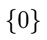
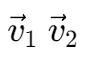
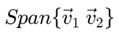
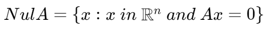
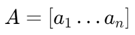
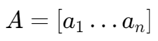
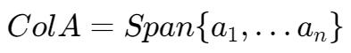

向量空间和子空间 | Vector Spaces and Subspaces
向量空间概念
一个向量空间，即一个向量集合。该集合满足以下特性：
- 任一集合中向量与任意标量的乘积同样在该集合中
- 任意两个向量的任意线性组合也在该集合中
子空间概念
任意子空间都是一个向量空间，因此子空间具有向量空间的所有性质。
任意向量空间同时也是更大的向量空间的子空间。
只有零向量的空间，即 
{零子空间}(Zero Subspace)
生成空间 | Span
设两个向量 ，
 即为由集合  生成的子空间。
生成的子空间。
该子空间中元素为集合中所有元素的任意线性组合的集合。
零空间 | Null Space
对于矩阵 A，其对应的零空间定义为：

列空间 | Column Space
对于  的矩阵 A，其可以看作是 n 个向量的组合 ，其列空间
的矩阵 A，其可以看作是 n 个向量的组合 ，其列空间
